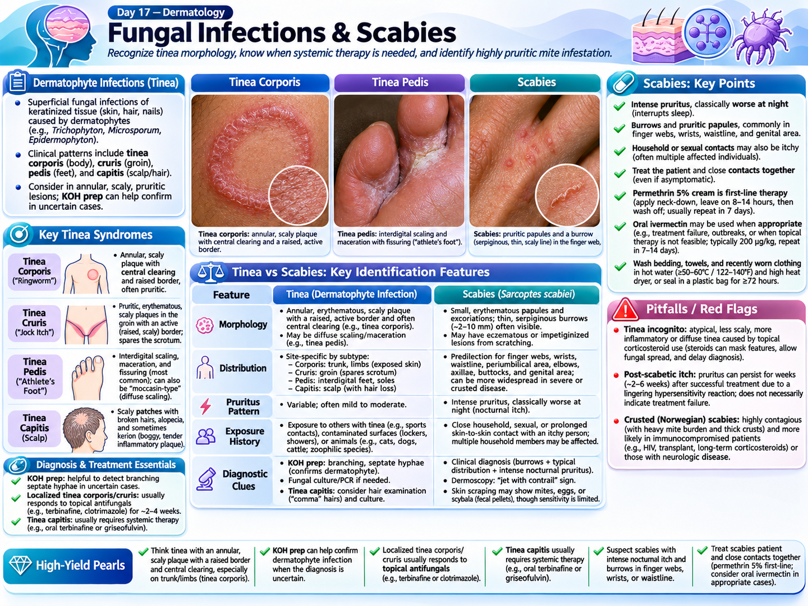
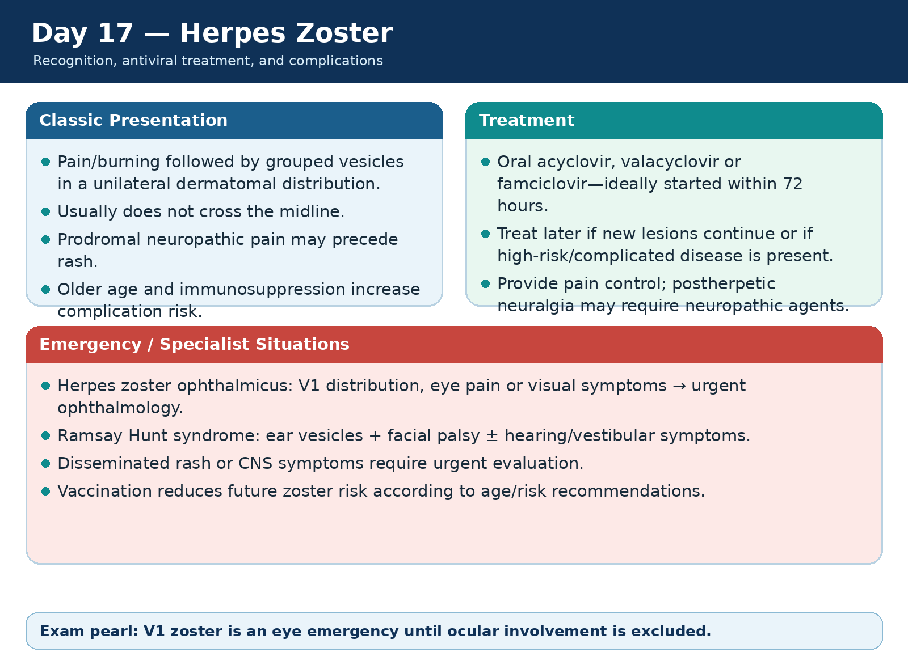
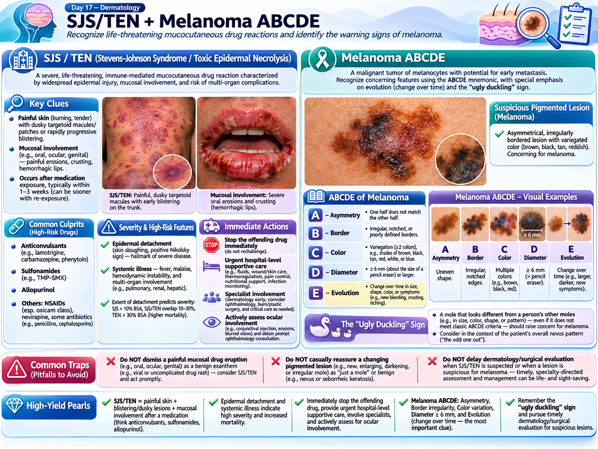

🩺 Common Derm Conditions, SSTIs & Dermatologic Emergencies
Atopic vs contact dermatitis, psoriasis, urticaria/angioedema, acne/rosacea, fungal infections/scabies, common SSTIs, necrotizing soft-tissue infection, herpes zoster, and SJS/TEN with melanoma ABCDE.
90 questions
Atopic vs Contact Dermatitis
Differentiate atopic dermatitis from allergic and irritant contact dermatitis; manage flares and trigger avoidance.
Recognition
- Atopic dermatitis causes chronic pruritic eczematous disease with xerosis and flexural involvement in older children/adults.
- Contact dermatitis usually follows a clear exposure pattern; allergic disease is intensely pruritic while irritant disease may burn or sting.
- Lichenification and excoriations suggest chronic scratching.
Key diagnostic clues
- Personal or family history of atopy supports atopic dermatitis.
- Geometric or localized lesions at exposure sites favor contact dermatitis.
- Patch testing helps recurrent or unclear allergic contact dermatitis.
Treatment
- Daily emollients and skin-barrier care are essential.
- Use topical corticosteroids matched to site/severity; topical calcineurin inhibitors can be steroid-sparing on sensitive areas.
- Avoid triggers, harsh soaps and fragranced products.
Pitfalls
- Weeping crusted lesions may indicate secondary infection.
- Do not keep escalating steroid potency without reassessing diagnosis and trigger exposure.
- Remember topical medications themselves can cause allergic contact dermatitis.
🖼️ Atopic vs Contact Dermatitis
Click to open/close.
Psoriasis
Classic plaque psoriasis recognition, comorbidities, and treatment escalation.
Classic presentation
- Well-demarcated erythematous plaques with silvery scale, usually on extensor surfaces, scalp or lumbosacral area.
- Nail pitting or onycholysis supports the diagnosis.
- Auspitz sign and Koebner phenomenon are classic board-style associations.
Important associations
- Screen for psoriatic arthritis with joint pain, dactylitis, enthesitis or inflammatory back pain.
- Psoriasis is linked to metabolic syndrome and increased cardiovascular risk.
- Erythroderma or pustular disease may require urgent specialist care.
Treatment ladder
- Limited disease: topical corticosteroids and/or vitamin D analogues.
- More extensive disease: phototherapy or systemic therapy.
- Moderate–severe disease or arthritis may need methotrexate, biologics or other systemic agents.
Common traps
- Do not confuse seborrheic dermatitis or tinea with psoriasis without checking morphology.
- NSAIDs may help arthritis pain but do not treat skin disease adequately.
- Widespread unstable psoriasis should not be casually managed with prolonged systemic steroids.
🖼️ Psoriasis High-Yield Review
Click to open/close.
Urticaria & Angioedema
Separate uncomplicated hives from airway-threatening allergy and bradykinin-mediated swelling.
Pattern recognition
- Urticaria causes transient itchy wheals; individual lesions usually resolve within 24 hours.
- Angioedema involves deeper swelling of lips, eyelids, tongue or extremities.
- Histamine-mediated angioedema often occurs with hives; ACE-inhibitor angioedema typically does not.
Evaluation
- Ask about medications, foods, infections, insect stings and prior episodes.
- Assess airway, voice change, dyspnea, wheeze, hypotension and GI symptoms immediately.
- Chronic spontaneous urticaria lasts more than 6 weeks.
Treatment
- Non-sedating H1 antihistamines are first-line for uncomplicated urticaria.
- If anaphylaxis is suspected, give IM epinephrine immediately and support ABCs.
- ACE-inhibitor angioedema requires stopping the culprit medication.
Emergency points
- Airway symptoms, stridor, wheeze, hypotension or multi-system reaction = treat as anaphylaxis.
- Antihistamines and steroids are adjuncts; they do not replace epinephrine.
- Observe severe reactions for recurrence when clinically appropriate.
🧭 Urticaria & Angioedema Algorithm
Click to open/close.
Acne & Rosacea
Recognize comedonal acne vs rosacea and choose initial outpatient therapy.
Acne vulgaris
- Comedones are the hallmark lesion; inflammatory papules/pustules may coexist.
- Mild acne often starts with topical retinoid ± benzoyl peroxide.
- Moderate inflammatory acne may need combination topical therapy or oral tetracycline-class treatment.
Rosacea
- Central facial flushing/erythema, telangiectasia and inflammatory papules/pustules are typical.
- Rosacea does not produce comedones.
- Heat, alcohol, spicy foods and sun frequently trigger flares.
Treatment pearls
- Use non-comedogenic skin care and sunscreen.
- Topical metronidazole or azelaic acid are common rosacea treatments; doxycycline may help inflammatory disease.
- Severe nodulocystic acne or scarring acne warrants dermatology referral.
Pitfalls
- Avoid topical antibiotic monotherapy for acne.
- Pregnancy changes safe acne options—retinoids are generally avoided.
- Ocular symptoms in rosacea should not be ignored.
🖼️ Acne & Rosacea High-Yield Review
Click to open/close.
Fungal Infections & Scabies
Spot annular fungal disease and intense nocturnal pruritus due to scabies.
Tinea / dermatophytes
- Tinea corporis often presents as annular scaly plaques with central clearing and raised border.
- KOH prep can help confirm diagnosis when uncertain.
- Localized tinea corporis or cruris usually responds to topical antifungals.
Scabies
- Intense nocturnal itch with burrows in finger webs, wrists, waistline or genital area is classic.
- Household or sexual contacts may also be itchy.
- Treat the patient and close contacts together.
Management
- Tinea capitis usually requires systemic therapy.
- Permethrin 5% cream is standard first-line therapy for scabies; oral ivermectin may be used when appropriate.
- Wash or bag bedding and clothing as recommended.
Pitfalls
- Topical steroid use may mask tinea (tinea incognito).
- Post-scabetic itch can persist after successful treatment.
- Crusted scabies is highly contagious and more likely in immunocompromised patients.
🖼️ Fungal Infections & Scabies
Click to open/close.
Impetigo, Cellulitis, Erysipelas & Abscess
Recognize superficial, nonpurulent, and purulent soft-tissue infection patterns.
Clinical patterns
- Impetigo produces superficial honey-colored crusts, especially in children.
- Cellulitis is diffuse warmth, erythema and tenderness without a drainable collection.
- Erysipelas is more superficial, bright red and sharply demarcated; abscesses are fluctuant purulent collections.
Initial decisions
- Determine if there is purulence, fluctuance or systemic toxicity.
- Mark borders and reassess progression when managed as an outpatient.
- Culture purulent material when appropriate.
Treatment
- Abscesses usually need incision and drainage.
- Nonpurulent cellulitis is often treated for streptococci ± MSSA according to local practice.
- MRSA coverage depends on purulence and risk factors.
Escalation clues
- Rapid progression, severe pain, hypotension or toxic appearance require urgent reassessment.
- Failure of outpatient therapy, immunocompromise or high-risk locations may require admission.
- Pain out of proportion or skin necrosis should trigger concern for necrotizing infection.
🧭 SSTI Recognition & Management Algorithm
Click to open/close.
Necrotizing Soft-Tissue Infection
Rapidly progressive soft-tissue infection requiring immediate surgical thinking.
Red flags
- Severe pain out of proportion to exam is the classic clue.
- Rapid progression, edema beyond erythema, bullae, ecchymosis, crepitus or skin necrosis are ominous.
- Systemic toxicity and shock may occur early or late.
Who is high risk?
- Diabetes, immunosuppression, recent surgery, trauma and peripheral vascular disease increase risk.
- Deep or perineal infections deserve particular caution.
- A normal-appearing early skin exam does not exclude NSTI.
Immediate management
- Call surgery urgently; do not delay definitive management for routine imaging when suspicion is high.
- Start broad-spectrum IV antibiotics covering MRSA, Gram-negatives and anaerobes.
- Aggressive fluids and ICU-level support may be needed.
Board pearl
- Definitive treatment is operative exploration and debridement.
- Repeat debridement is often necessary.
- Clinical judgment is more important than any score when suspicion is high.
🧭 Necrotizing Soft-Tissue Infection Algorithm
Click to open/close.
Herpes Zoster
Dermatomal vesicular eruption, antivirals, and complications such as ophthalmic disease.
Recognition
- Pain or burning precedes grouped vesicles in a unilateral dermatomal pattern.
- The eruption usually does not cross the midline.
- Older or immunocompromised patients are at higher risk of complications.
Treatment
- Start oral antiviral therapy as early as possible, ideally within 72 hours.
- Provide pain control and monitor for postherpetic neuralgia.
- Severe or disseminated disease may require IV therapy.
Complications
- V1 involvement suggests herpes zoster ophthalmicus and needs urgent eye assessment.
- Ramsay Hunt syndrome can present with ear vesicles plus facial palsy.
- Disseminated rash or CNS symptoms require urgent evaluation.
Prevention / pitfall
- Vaccination reduces future zoster risk.
- Do not dismiss new eye pain or visual symptoms in V1 disease.
- Immunocompromised patients may present atypically or more severely.
🖼️ Herpes Zoster High-Yield Review
Click to open/close.
SJS/TEN + Melanoma ABCDE
Recognize the dangerous drug rash emergency and the classic melanoma warning signs.
SJS / TEN
- Painful skin, blistering and mucosal involvement after a medication exposure are key clues.
- Common culprits include certain anticonvulsants, sulfonamides and allopurinol.
- Epidermal detachment and systemic illness signal high severity.
Immediate actions
- Stop the offending drug immediately.
- Urgent hospital-level supportive care and specialist involvement are required.
- Ocular involvement should be actively assessed.
Melanoma ABCDE
- A — asymmetry; B — border irregularity; C — color variation; D — diameter; E — evolution.
- Evolution or change over time is particularly important.
- An ugly-duckling lesion should lower your biopsy threshold.
Common traps
- Do not confuse painful mucosal drug eruptions with benign simple exanthems.
- A changing pigmented lesion should not be casually reassured away.
- Timely dermatology/surgical evaluation matters for suspected melanoma.
🖼️ SJS/TEN & Melanoma ABCDE
Click to open/close.